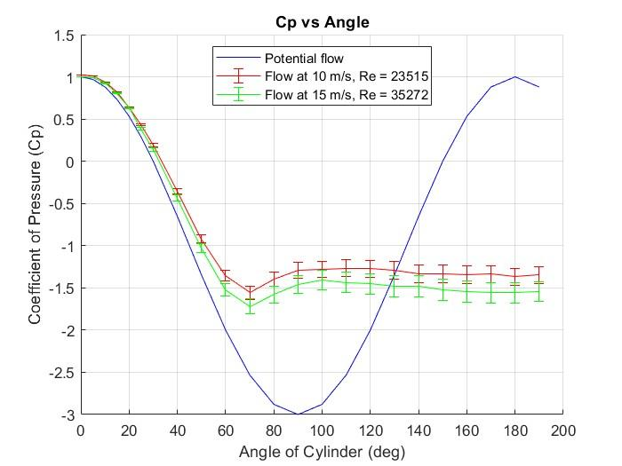
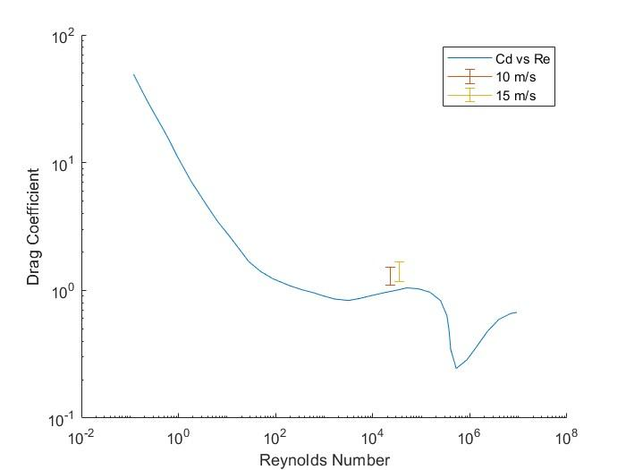

AE 315 · Experimental Aerodynamics · Spring 2025 · ERAU
The cylinder is one of the most studied shapes in fluid mechanics because it captures bluff-body aerodynamics in a clean, symmetric geometry: stagnation, attached flow, boundary layer separation, and a turbulent wake. Understanding how pressure distributes around a blunt body — and how drag arises from that distribution — is directly relevant to designing fuselages, struts, landing gear, and external fuel tanks.
A 1.4-inch cylinder with a single static pressure port was rotated to 24 angular positions from 0° to 180°, capturing differential pressure at each angle for both test speeds. The pressure coefficient was found by normalizing each reading against the freestream dynamic pressure. Potential flow theory predicts Cp = 1 − 4sin²(θ), which was plotted alongside measured data for comparison.
Drag was extracted by integrating Cp·cos(θ) around the cylinder using MATLAB’s trapz function. This pressure-integration method converts the mapped surface pressures directly into a net streamwise force coefficient, requiring no physical force sensor:
Cd = ∫0π Cp cos(θ) dθ


Pressure data was loaded from 24 .mat files per test speed, converted to Pascals, and integrated to produce Cp and Cd. The potential flow reference was computed analytically for comparison.
% Pressure coefficient at 10 m/s
Cp_10 = dp_10ms / (0.5 * density * 10^2) + 1;
% Potential flow reference
Cp_potential = 1 - 4 .* sind(angles).^2;
% Drag coefficient via trapezoidal integration
theta = deg2rad(angles);
Cd_10 = trapz(theta, Cp_10 .* cos(theta)); % = 1.3055